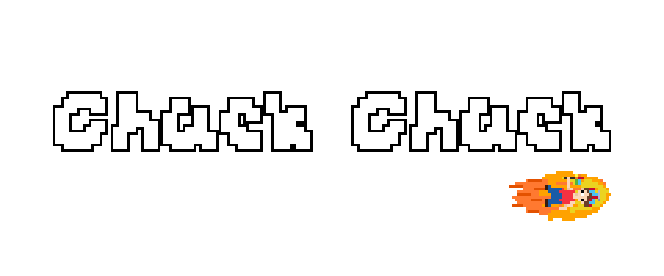
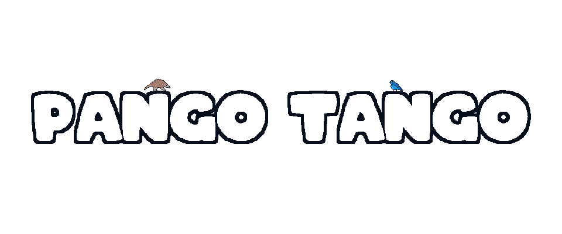
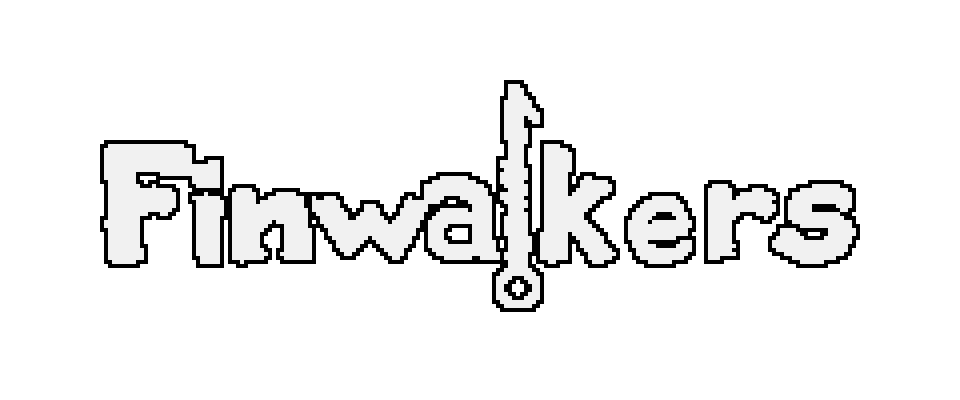

Game Jam: The Very Serious Juniper Dev Game Jam
June 19, 2026 - June 27, 2026
Placement: #1703 of 3,498

Game Jam: Cookie Jam #4
June 13, 2026 - June 21, 2026
Placement: #2 of 66

Game Jam: Oink Jam 2
May 1, 2026 - May 14, 2026
Placement: #18 of 54